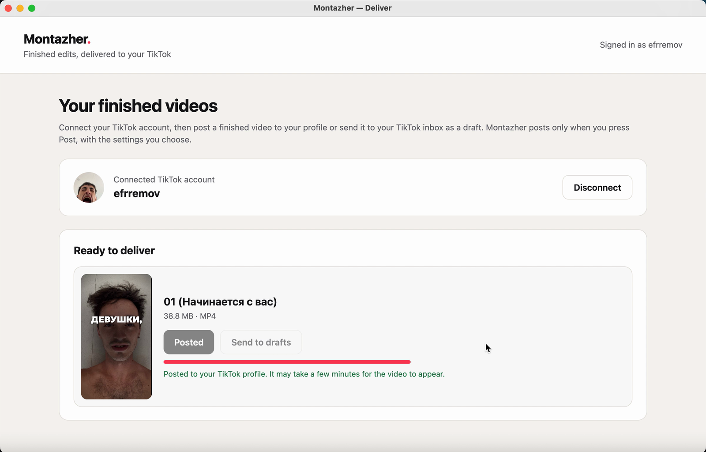

How delivery to TikTok works
Montazher uses the official TikTok Login Kit and Content Posting API (direct post and upload to drafts).
Open the Montazher app
The Montazher desktop app shows the list of your finished videos.
Continue with TikTok
You sign in on TikTok's own authorization page and approve the requested permissions. Montazher never sees your TikTok password.
Post a video
Press Post to TikTok. Montazher shows the account it will post to, a preview, and the post settings: a title, who can view the video (no default is pre-selected), whether others may comment, duet or stitch (all off by default), and a disclosure for promotional content. The video is posted only when you press Post.
Or send it to your drafts
Press Send to drafts. TikTok sends you an inbox notification; you open the draft in the TikTok app, edit it and post it yourself.

Permissions we request
| Permission | Why Montazher needs it |
|---|---|
| user.info.basic | To show your display name and avatar, so you can see which TikTok account will receive the video before sending it. |
| video.upload | To upload the finished video you selected to your TikTok drafts (inbox), when you choose Send to drafts. |
| video.publish | To post the finished video you selected to your TikTok profile, with the title, visibility and interaction settings you choose, when you press Post. |
What Montazher does not do
- It does not post anything without your action, and it does not schedule posts.
- It does not read your existing videos, followers, messages or analytics.
- It does not upload anything you did not choose.
Disconnecting
Press Disconnect in the Montazher app to revoke access. You can also remove Montazher at any time in the TikTok app: Settings and privacy → Security → Apps and services permissions.